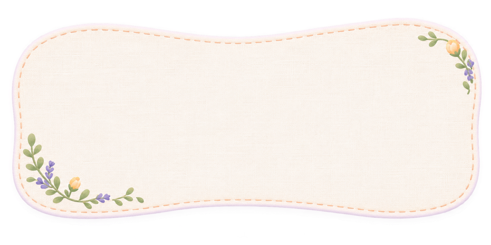
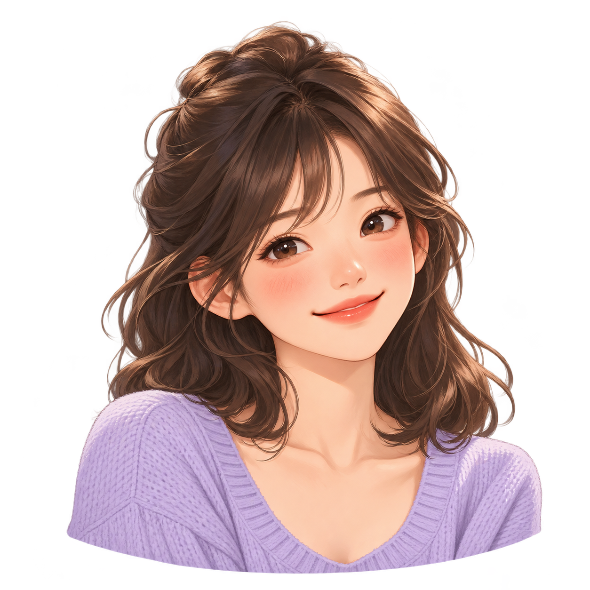
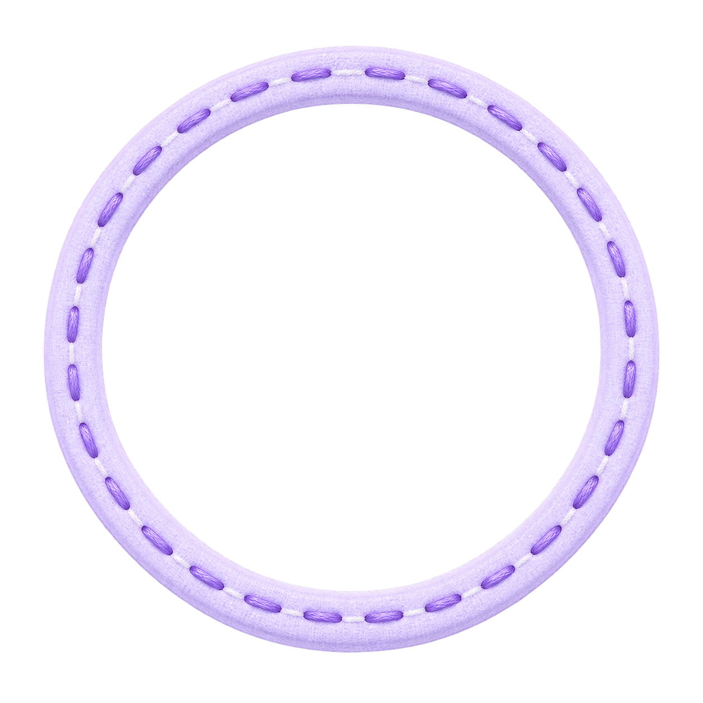
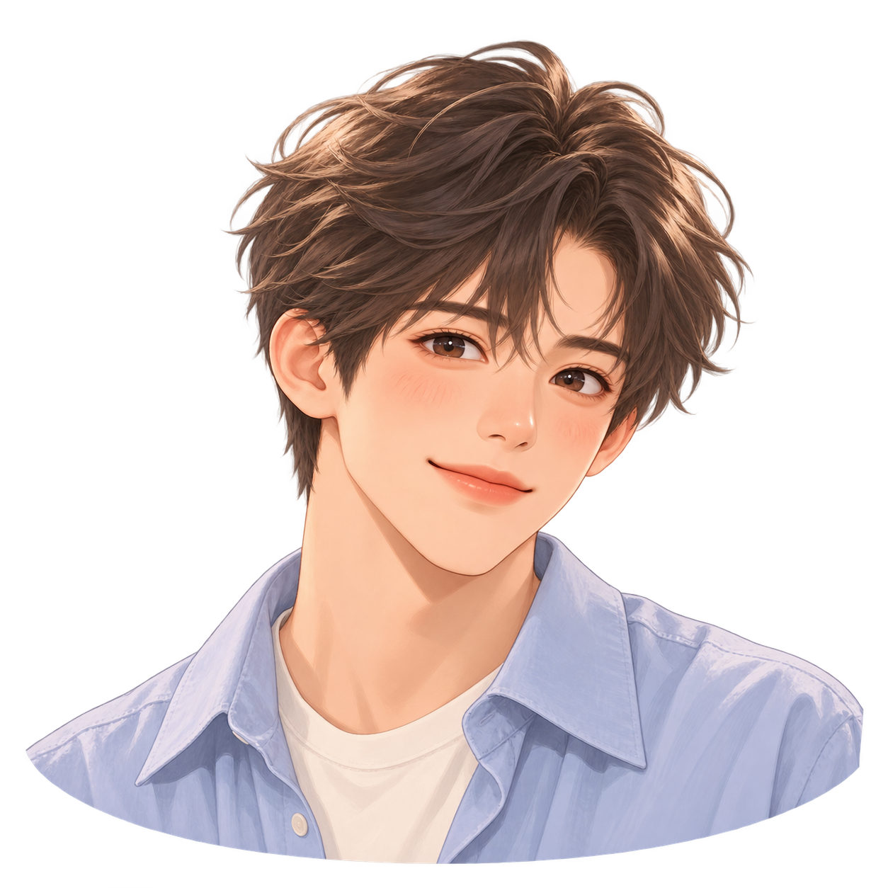

我们的日常 · UI 素材库
沿用双人签到台的淡紫与织物质感。13 个独立素材：9 张透明插画、4 张商品封面。所有图片均无文字，头像为虚构示例。
独立图层叠加示例




换头像，保留绣边
底板、人物和绣边来自独立 PNG；这里的名字是 HTML 文字。头像可以替换，状态与按钮由前端正常渲染。
此处仅演示素材组合，不是业务页面。图片按最终容器保持比例，交互控件不放进图片。
沿用双人签到台的淡紫与织物质感。13 个独立素材：9 张透明插画、4 张商品封面。所有图片均无文字，头像为虚构示例。




底板、人物和绣边来自独立 PNG；这里的名字是 HTML 文字。头像可以替换，状态与按钮由前端正常渲染。
此处仅演示素材组合，不是业务页面。图片按最终容器保持比例，交互控件不放进图片。